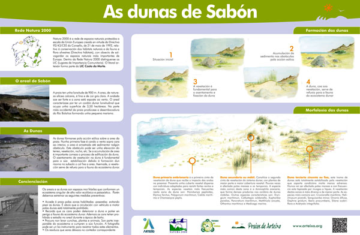
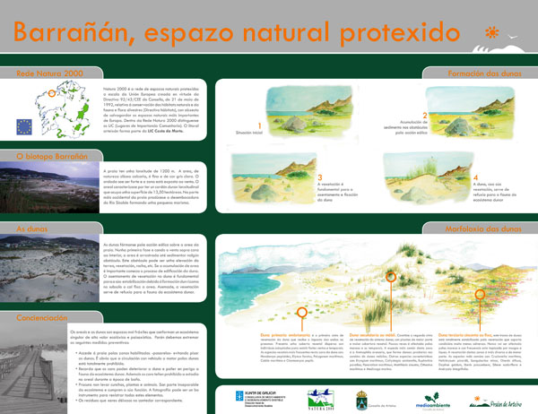
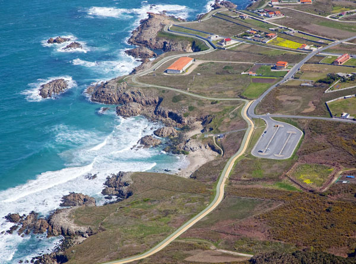
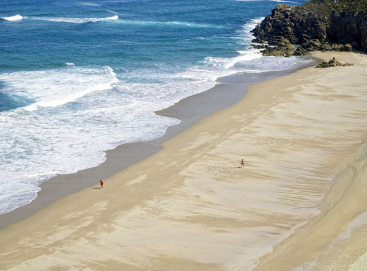

Atrás
Arteixo

Las Dunas de Sabón

Barrañán, espacio natural protegido
La vida de Barrañán

Playa de Repibelo (Playa de A Salsa)
Playa de A Hucha
Playa de Valcovo

Playa de Combouzas
Playa de Barrañán
Playa de O Reiro
Portada
Mapa
Arteixo
Atrás
As Dunas de Sabón
Barrañán, espazo natural protexido
A vida de Barrañán
Praia de Repibelo (Praia de A Salsa)
Praia de A Hucha
Praia de Valcovo
Praia de Combouzas
Praia de Barrañán
Praia de O Reiro
Portada
Mapa
Arteixo
Home
Sabón Dunes
Barrañán protected area
Wildlife in Barrañal
Repibelo Beach (A Salsa Beach)
A Hucha Beach
Valcovo Beach
Combouzas Beach
Barrañán Beach
O Reiro Beach
Map